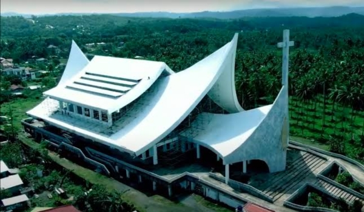
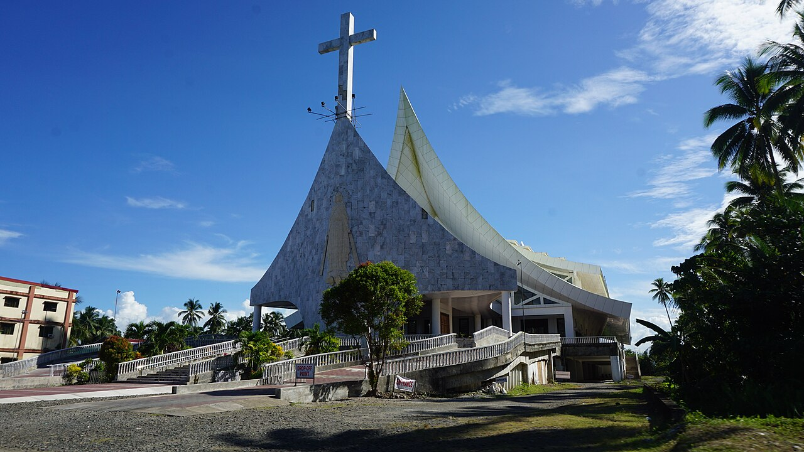
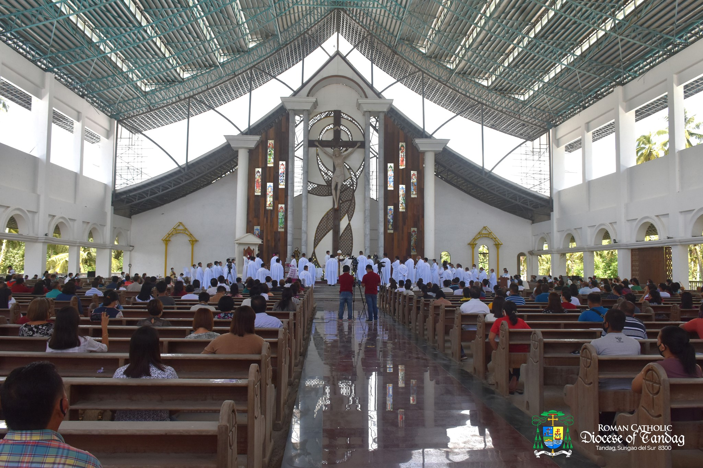

San Nicolas de Tolentino Cathedral serves as the main religious center of Tandag City and is recognized for its prominent architectural design. The structure features a simple yet elegant façade that reflects traditional Catholic church elements combined with modern influences. Inside, the cathedral is spacious and well-lit, creating a solemn and peaceful atmosphere for worship. The altar is beautifully designed and serves as the focal point of religious gatherings. The cathedral stands as a symbol of faith and unity for the local community.
The surroundings of the cathedral add to its significance as a place of worship and reflection. Its location in the city center makes it easily accessible to residents and visitors alike. The interior design includes religious images and decorations that enhance its spiritual ambiance. The quiet environment encourages prayer and contemplation among churchgoers. Overall, the cathedral provides both a physical and spiritual space for religious devotion.


The cathedral has a long history rooted in the spread of Catholicism in Surigao del Sur during the Spanish colonial period. It was established as part of missionary efforts to introduce Christianity to the local population. Over time, the church evolved from a simple parish into a cathedral as the community grew. The development of the structure reflects the increasing importance of religion in the region. It has served as a center for major religious events and celebrations.
Throughout the years, the cathedral has undergone renovations to maintain its structure and accommodate more worshippers. These improvements ensured that the church remained functional while preserving its historical significance. The cathedral has witnessed significant moments in the religious life of the community. It continues to play a vital role in local traditions and ceremonies. Today, it stands as a testament to enduring faith and cultural heritage.
The structure reflects a blend of modern and traditional Filipino ecclesiastical design. Its façade features simple geometric lines complemented by a bell tower and prominent crucifix. Inside, the altar honors Saint Nicholas of Tolentino, the city’s patron saint, with stained-glass windows and devotional imagery that highlight local religious artistry.


Beyond its liturgical function, the cathedral serves as a hub for diocesan events, religious festivals, and community outreach programs. The annual feast of Saint Nicholas of Tolentino draws pilgrims and visitors from across the region, reinforcing the cathedral’s importance as both a spiritual and cultural center of Tandag City.